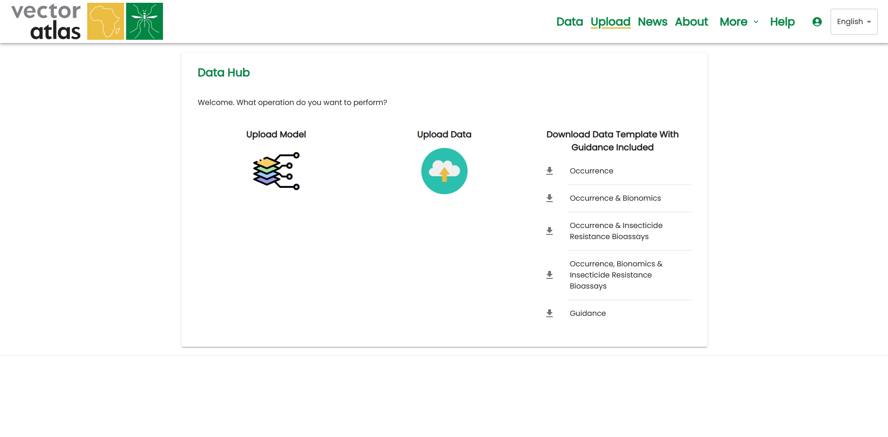
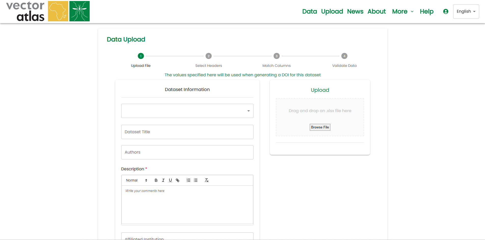
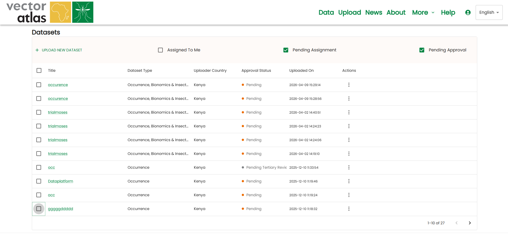
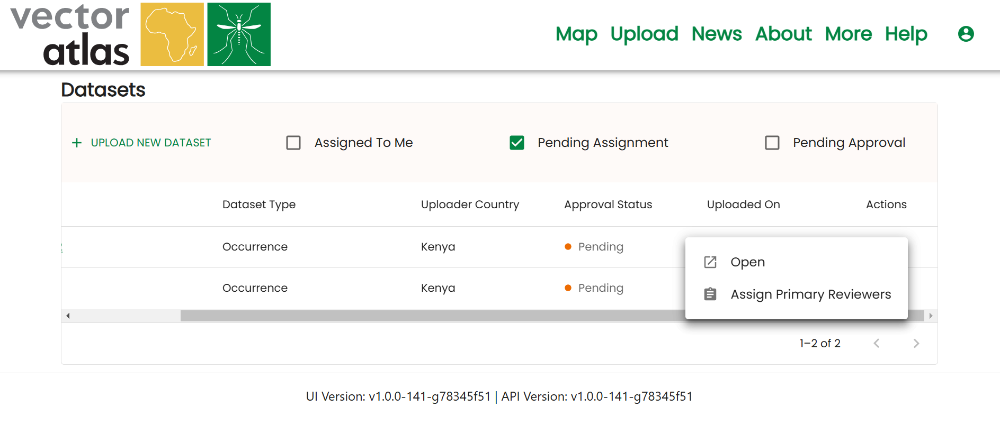
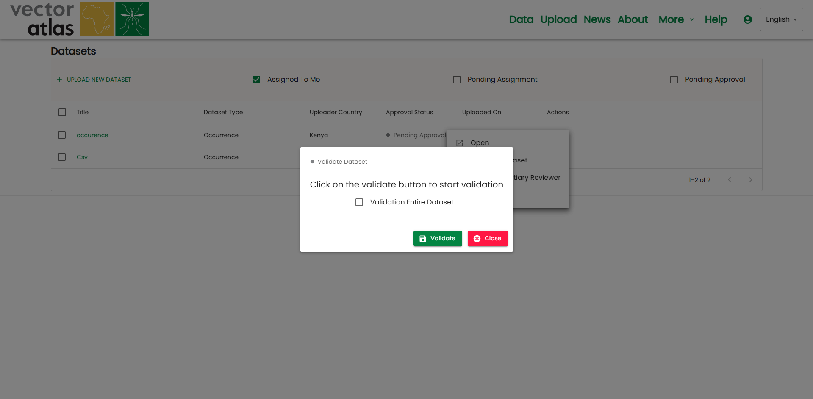

DATA UPLOAD
Click on the
uploadlink in the navigation bar.You will be directed to the upload interface.

Downloading Templates
Templates help users upload data in a system-compatible format.
Click on the
download arrow iconson the right side of the panel to download templates.Four major templates are available:
First template: Contains the “Occurrence” section only.
Second template: Contains “Occurrence” and “Bionomics” sections.
Third template: Contains “Occurrence” and “IR Bioassays” sections.
Final template: Contains all three sections: “Occurrence,” “Bionomics,” and “Insecticide Resistance.”

Uploading Data
After downloading and filling out the template:
Click on the
Upload Dataicon.Follow the four-step upload process.
Step 1: Select the dataset and enter details:
Dataset title, description, authors, affiliated institutions, and DOI (if available).
Step 2: Choose to either:
Upload directly to blob storage for review, OR
Continue with column matching and validation before uploading to blob storage.

Visualization of Uploaded Datasets by Reviewer Manager
Navigate to the
Uploaded Datasetspage:Click
Morein the top navigation and selectDatasets.
Filter datasets using checkboxes:
Assigned to you.
Pending assignment.
Pending approval.

Assignment of Uploaded Datasets to Reviewers
Reviewer managers can assign datasets by clicking the three dots in the action column.
Before assignment: Status is
Pending.After assigning a primary reviewer: Status changes to
Primary Review.


Primary reviewers must review the dataset before re-uploading.
The reviewer manager can assign a tertiary reviewer, changing the status to
Tertiary Review.Reviewers can:
Request a dataset re-upload from the primary reviewer.
Send an email to the uploader or tertiary reviewer.
Reject the dataset if it does not meet the required standards.
Approval of Uploaded Datasets
Once all necessary steps are completed, the dataset can be approved by the reviewer manager.
The reviewer manager can also:
Validate the dataset before approval.
Send an email for further communication.

Ingestion to VA Database and Notifying the Uploader
Once the dataset is approved, it is automatically ingested into the Vector Atlas database.
The dataset is stored in the database and appears on the map, making it visible to all users.